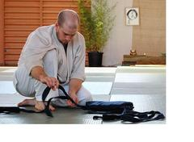

Eric Klotch
Eric leads most classes at the club. He has studied Aikido with Juba Nour Shihan since 2000, attending his seminars internationally and traveling regularly to train with him in NYC and Baja Aikido. Eric has trained seriously in other martial arts as well, including Shotokan Karate and the Korean art Hapkido.